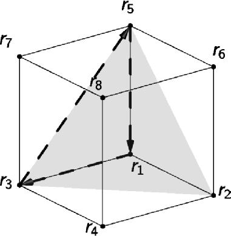

A photon transport simulation is initiated with
solution = ValoMC(mesh, medium, boundary, options); solution = ValoMC(mesh, medium, boundary);
Documentation for each input structure and the output structure is provided here. Most of the fields in the input structures are arrays. For convenience, it is also possible to give the fields as scalars or as incomplete arrays. ValoMC will fill the arrays with the scalar value or complete them with the default values.
1: mesh
The mesh structure defines the geometry of the problem.
| Field name | Description | Unit | Element type [array size] |
| r | grid point coordinates | mm | double [Nr = number of coordinates in the system x 3] |
| H | indices to the grid points (tetrahedrons), i.e element topology | int64 [Ne = number of elements in the system x 4] | |
| BH | indices to the boundary grid points (edges) | int64 [Nb = number of edges in the system x 2] | |
| Optional fields | |||
| HN | neighborhood topology | int64 [Ne = number of elements in the system x 4] | |
Geometry description
A single volume element is a tetrahedron.
For example, a simple cuboidal region that consists of six tetrahedrons can be built with the coordinate matrix
and network topology matrices
The elements in H and BH refer to the rows in r. Each row in H refers to a single tetrahedron and each row in BH refers to a single boundary element (triangle). As the box boundary consists of 6 faces (12 triangles) and six tetrahedrons, there are 12 rows in BH and six rows in H. The first row of matrix H is illustrated in the figure below

2: medium
This structure is used to set the properties of the the medium. Ne is the number elements in the mesh. If a scalar value is given, it is applied to all elements.
| Field name | Description | Unit | Element type [array size] |
| refractive_index | \(n\) | double [Ne] or double [Ne x 3] | |
| absorption_coefficient | \(\mu_a\) | 1/mm | double [Ne] or double [Ne x 3] |
| scattering_coefficient | \(\mu_s\) | 1/mm | double [Ne] or double [Ne x 3] |
| scattering_anisotropy | \(g\) (Henye-Greenstein phase function) | double [Ne] or double [Ne x 3] |
For detailed description of the coefficients, see e.g. the books by [Ihshimaru] and [Wang]
[Ishimaru] Wave Propagation and Scattering in Random Media, IEEE Press and Oxford University Press, 1997 [Wang] Biomedical Optics Principles and Imaging, Wiley, 2007
When three dimensional arrays are used, it is assumed that the mesh has been created with createGridMesh. The values then represent the values in each in grid point.
3: boundary
This structure is used to set the properties of the boundary surrounding the medium. Nb refers to the number of elements in the boundary. If a scalar value is given, it is applied to all elements.
| Field name | Description | Unit | Element type [array size] |
| lightsource |
|
double [Nb] | |
| Optional fields | |||
| exterior_refractive_index | Sets the refractive index outside of the simulation geometry. This affects how the photon packets reflect when they encounter a boundary element. | double [Nb ] | |
| Optional fields (lightsource="direct, cosinic, isotropic") | |||
| lightsource_direction | Used to give a custom direction for a light source | double [Nb x 3 ] | |
| lightsource_direction_type |
|
cell [Nb] | |
| lightsource_irradiance | Sets the relative irradiance of the light source at each boundary element. (default=1) | ||
| Optional fields (lightsource='pencil') | |||
| lightsource_position | The coordinate where to place the pencil beam to. Must be located within the boundary element. | cell [Nb] | |
4: options
All fields are optional.
| Field name | Description | Unit | Type |
| frequency | (default=0) Frequency of intensity modulation | [1/s] | double |
| phase0 | (default=0) Phase at the lightsource for frequency modulation | double | |
| seed | Random number generator seed (default={}) take seed from time | int64 | |
| photon_count | (default=1e6) Total number of photon packets | int64 | |
| disable_progressbar | (default=false) Set to true to disable progress bar | logical |
1: solution
| Field name | Description | Unit | Element type [array size] |
| boundary_exitance | Exitance at the edge of each boundary element | W/mm | double [Nb = number of boundary elements in the system ] |
| element_fluence | Fluence at each element | double [Ne = number of area elements in the system] | |
| simulation_time | Total simulation time | seconds | |
| Optional fields (options.seed=0) | |||
| seed_used | The random number seed that was used | double | |
| Optional fields (multidimensional optical parameters) | |||
| grid_fluence | Fluence for three dimensional optical parameters | W/mm | double |
The fluence is normalized so that that the integral of the exitance over the boundary 1 W when no photons are absorbed in the medium (i.e. \(\mu_a=0\)). This means the total power of a all light sources is in a single simulation is 1 W.